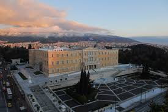
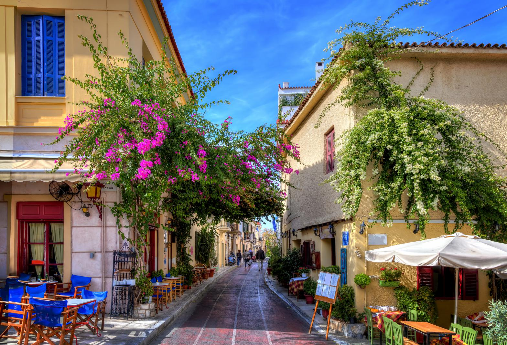
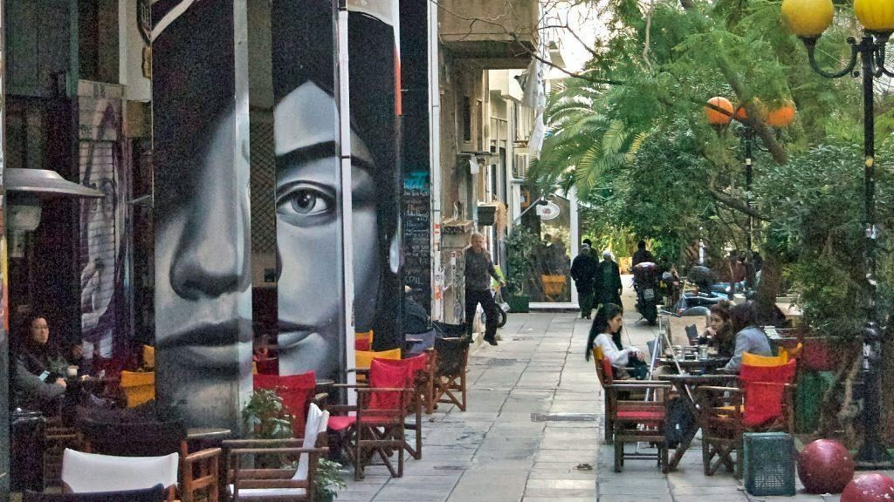
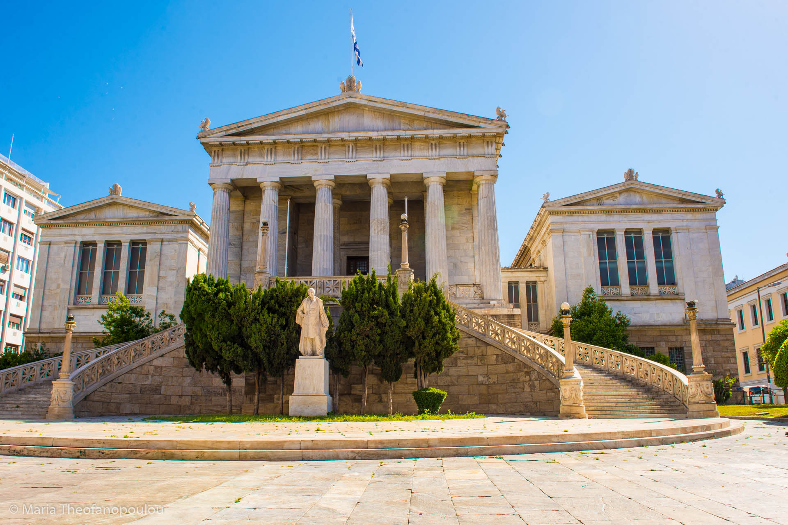
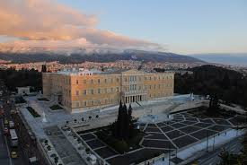
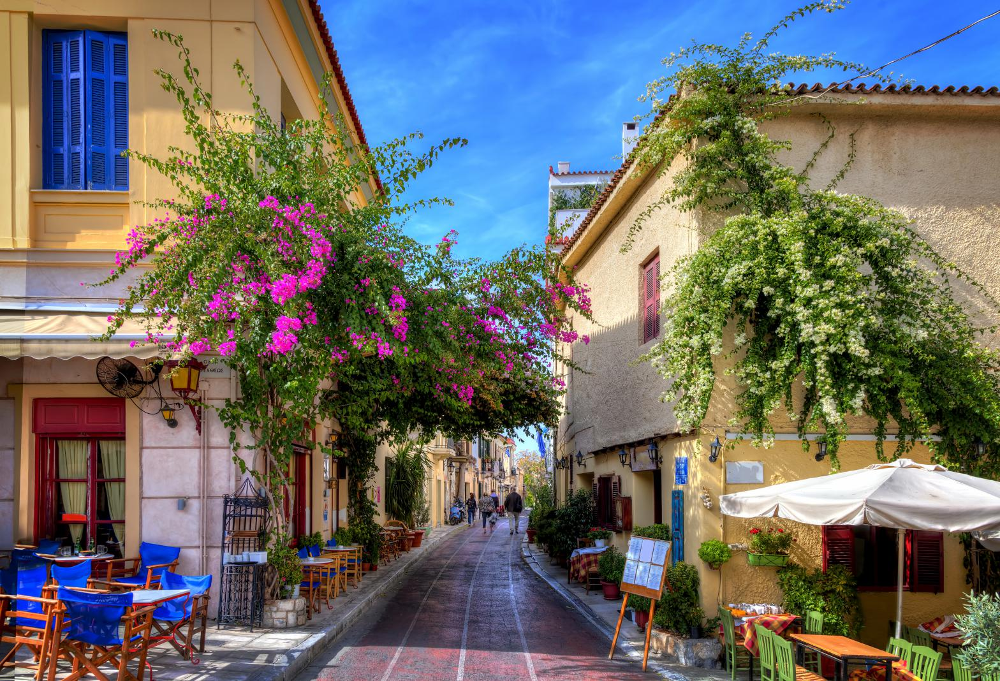
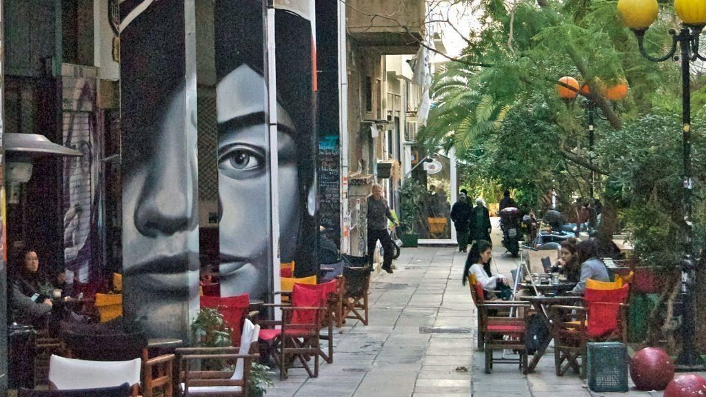
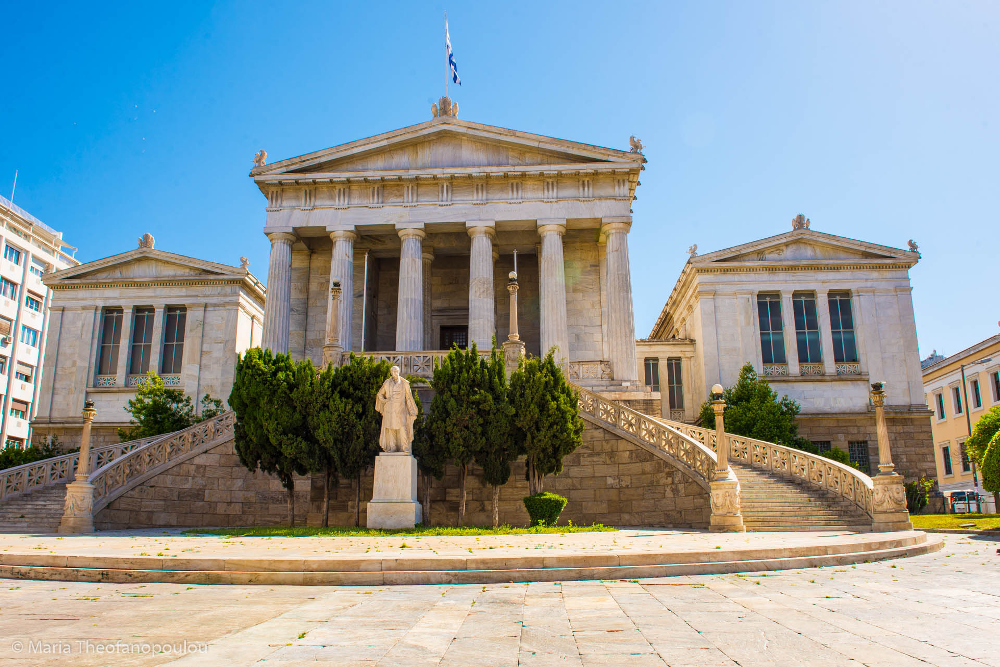

Αθήνα
Η Αθήνα είναι η πρωτεύουσα της Ελλάδας και η ιστορικότερη πόλη της Ευρώπης, με την παρουσία της να καταγράφεται εδώ και 3.400 χρόνια. Το πολεοδομικό συγκρότημα της Αθήνας περιλαμβάνει τον Δήμο Αθηναίων και άλλους 34 δήμους, φιλοξενώντας σχεδόν το ένα τρίτο του συνολικού πληθυσμού της χώρας. Αποτελεί το διοικητικό, οικονομικό, βιομηχανικό και πολιτιστικό κέντρο της Ελλάδας.
 







Κατά την κλασική εποχή, η Αθήνα υπήρξε πανίσχυρη πόλη-κράτος και έθεσε τα θεμέλια του Δυτικού πολιτισμού. Εδώ γεννήθηκε η δημοκρατία, η δραματική ποίηση και η φιλοσοφία. Η πόλη φιλοξένησε την Ακαδημία του Πλάτωνα και το Λύκειο του Αριστοτέλη, ενώ ανέδειξε σπουδαίες προσωπικότητες όπως ο Σωκράτης, ο Περικλής και ο Σοφοκλής. Τα μνημεία της, με προεξάρχοντα τον Παρθενώνα στην Ακρόπολη, αποτελούν παγκόσμια σύμβολα.
Η σύγχρονη Αθήνα ανακηρύχθηκε πρωτεύουσα του νεοσύστατου ελληνικού κράτους το 1834. Έκτοτε γνώρισε ραγδαία ανάπτυξη, ιδιαίτερα μετά τη Μικρασιατική Καταστροφή και την άφιξη των προσφύγων. Σημαντικό ορόσημο στη σύγχρονη ιστορία της πόλης αποτέλεσε η διοργάνωση των Ολυμπιακών Αγώνων του 2004, η οποία κληροδότησε σημαντικά έργα υποδομής, όπως το Αττικό Μετρό, την Αττική Οδό και το νέο αεροδρόμιο «Ελευθέριος Βενιζέλος».
Γεωγραφικά, η Αθήνα εκτείνεται στην κεντρική πεδιάδα της Αττικής, το λεκανοπέδιο, το οποίο περιβάλλεται από τέσσερα μεγάλα όρη: το Αιγάλεω, την Πάρνηθα, την Πεντέλη και τον Υμηττό, ενώ νότια βρέχεται από τον Σαρωνικό κόλπο. Το κλίμα της είναι μεσογειακό, με θερμά καλοκαίρια και ήπιους χειμώνες, γεγονός που ευνοεί τον τουρισμό καθ' όλη τη διάρκεια του έτους.
Σήμερα, η Αθήνα είναι μια ζωντανή μητρόπολη που συνδυάζει την ιστορική κληρονομιά με τον σύγχρονο τρόπο ζωής. Διαθέτει πλήθος μουσείων, όπως το Νέο Μουσείο της Ακρόπολης και το Εθνικό Αρχαιολογικό Μουσείο, καθώς και μια έντονη νυχτερινή ζωή, γαστρονομική σκηνή και εμπορική δραστηριότητα, προσελκύοντας εκατομμύρια επισκέπτες ετησίως.